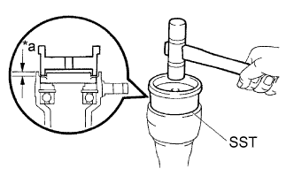
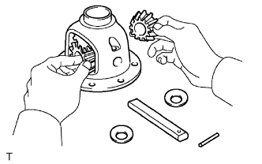
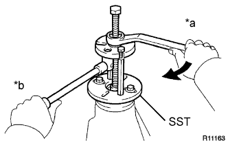

FRONT DIFFERENTIAL CARRIER ASSEMBLY > REASSEMBLY |
| 1. INSTALL FRONT DIFFERENTIAL SIDE GEAR SHAFT BEARING RH |
Using SST and a press, press in the shaft bearing.
Using a snap ring expander, install the snap ring.
| 2. INSTALL DIFFERENTIAL SIDE GEAR SHAFT SUB-ASSEMBLY RH |
 |
Install the shaft to the differential tube.
Using needle nose pliers, install the snap ring.
| 3. INSTALL DIFFERENTIAL SIDE GEAR SHAFT OIL SEAL |
|  |
Coat the lip of a new oil seal with MP grease.
| *a | Oil Seal Depth |
Using SST and a plastic-faced hammer, tap in the oil seal.
| 4. INSTALL DIFFERENTIAL CASE ASSEMBLY |
 |
Install the 2 thrust washers to the 2 side gears.
| Thickness | Thickness |
| 1.48 to 1.52 mm (0.0583 to 0.0598 in.) | 1.73 to 1.77 mm (0.0681 to 0.0696 in.) |
| 1.53 to 1.57 mm (0.0602 to 0.0618 in.) | 1.78 to 1.82 mm (0.0701 to 0.0716 in.) |
| 1.58 to 1.62 mm (0.0622 to 0.0637 in.) | 1.83 to 1.87 mm (0.0720 to 0.0736 in.) |
| 1.63 to 1.67 mm (0.0642 to 0.0657 in.) | 1.88 to 1.92 mm (0.0740 to 0.0755 in.) |
| 1.68 to 1.72 mm (0.0661 to 0.0677 in.) | - |
|  |
Install the 2 side gears, 2 pinion gears, 2 side gear thrust washers, 2 pinion thrust washers and pinion shaft to the differential case.
 |
Measure the side gear backlash.
Using a dial indicator, measure the side gear backlash while holding one pinion gear toward the differential case.
 |
Using a 5 mm pin punch and hammer, tap in the straight pin through the differential case and hole of the pinion shaft.
Stake the differential case.
| 5. INSTALL DIFFERENTIAL RING GEAR |
Clean the contact surfaces of the differential case and ring gear.
Heat the ring gear in water that is approximately 100°C (212°F).
Carefully remove the ring gear from the boiling water.
After the moisture on the ring gear has completely evaporated, quickly install the ring gear to the differential case.
Align the matchmarks on the ring gear with those of the differential case.
| *1 | Matchmark |
After the ring gear cools down, apply thread lock adhesive to the 10 set bolts and install them.
| 6. INSTALL FRONT DIFFERENTIAL CASE BEARING |
Using SST and a press, press the 2 bearings (inner) into the differential case.
| 7. INSTALL FRONT DIFFERENTIAL CASE BEARING |
Using SST and a press, press the case bearing (outer race) into the differential case bearing retainer.
| *1 | Case Washer |
Using SST and a press, press the case bearing (outer) into the differential carrier.
| *1 | Case Washer |
| 8. INSTALL FRONT DRIVE PINION REAR TAPERED ROLLER BEARING (OUTER) |
Using SST, install the front drive pinion rear tapered roller bearing (outer race).
| 9. INSTALL FRONT DRIVE PINION FRONT TAPERED ROLLER BEARING |
Using a brass bar and hammer, tap in the oil storage ring.
Using SST, install the front drive pinion front tapered roller bearing (outer race).
| *A | for Rear |
| *B | for Front |
| 10. INSTALL FRONT DRIVE PINION FRONT TAPERED ROLLER BEARING |
Install the washer to the drive pinion.
Using SST and a press, press the front bearing onto the drive pinion.
| 11. INSPECT DIFFERENTIAL DRIVE PINION PRELOAD |
 |
Install the drive pinion, roller bearing and oil slinger to the differential case.
|  |
Using SST, install the companion flange.
| *a | Turn |
| *b | Hold |
Adjust the drive pinion preload by tightening the companion flange nut.
Using SST to hold the flange in place, tighten the nut.
 |
Using a torque wrench, measure the preload.
| Item | Specified Condition |
| New bearing | 0.98 to 1.57 N*m (10 to 16 kgf*cm, 9 to 13 in.*lbf) |
| Used bearing | 0.49 to 0.78 N*m (5 to 7 kgf*cm, 4.3 to 6 in.*lbf) |
| 12. INSTALL DIFFERENTIAL CASE ASSEMBLY |
| 13. ADJUST DIFFERENTIAL RING GEAR BACKLASH |
Install the side bearing retainer with the 10 bolts.
Using SST and a dial indicator, measure the ring gear backlash.
| Thickness | Thickness | Thickness |
| 1.57 to 1.59 mm (0.0618 to 0.0625 in.) | 1.79 to 1.81 mm (0.0704 to 0.0712 in.) | 2.01 to 2.03 mm (0.0791 to 0.0799 in.) |
| 1.59 to 1.61 mm (0.0625 to 0.0633 in.) | 1.81 to 1.83 mm (0.0712 to 0.0720 in.) | 2.03 to 2.05 mm (0.0799 to 0.0807 in.) |
| 1.61 to 1.63 mm (0.0633 to 0.0641 in.) | 1.83 to 1.85 mm (0.0720 to 0.0728 in.) | 2.05 to 2.07 mm (0.0807 to 0.0814 in.) |
| 1.63 to 1.65 mm (0.0641 to 0.0649 in.) | 1.85 to 1.87 mm (0.0728 to 0.0736 in.) | 2.07 to 2.09 mm (0.0814 to 0.0822 in.) |
| 1.65 to 1.67 mm (0.0649 to 0.0657 in.) | 1.87 to 1.89 mm (0.0736 to 0.0744 in.) | 2.09 to 2.11 mm (0.0822 to 0.0830 in.) |
| 1.67 to 1.69 mm (0.0657 to 0.0665 in.) | 1.89 to 1.91 mm (0.0744 to 0.0751 in.) | 2.11 to 2.13 mm (0.0830 to 0.0838 in.) |
| 1.69 to 1.71 mm (0.0665 to 0.0673 in.) | 1.91 to 1.93 mm (0.0751 to 0.0759 in.) | 2.13 to 2.15 mm (0.0838 to 0.0846 in.) |
| 1.71 to 1.73 mm (0.0673 to 0.0681 in.) | 1.93 to 1.95 mm (0.0759 to 0.0767 in.) | 2.15 to 2.17 mm (0.0846 to 0.0854 in.) |
| 1.73 to 1.75 mm (0.0681 to 0.0688 in.) | 1.95 to 1.97 mm (0.0767 to 0.0776 in.) | - |
| 1.75 to 1.77 mm (0.0688 to 0.0696 in.) | 1.97 to 1.99 mm (0.0776 to 0.0783 in.) | - |
| 1.77 to 1.79 mm (0.0696 to 0.0704 in.) | 1.99 to 2.01 mm (0.0783 to 0.0791 in.) | - |
| 14. INSPECT TOTAL PRELOAD |
Using a torque wrench, measure the preload with the teeth of the drive pinion and ring gear in contact.
| Item | Specified Condition |
| New bearing | 1.2 to 2.45 N*m (13 to 24 kgf*cm, 11 to 21 in.*lbf) |
| Used bearing | 0.71 to 1.66 N*m (8 to 16 kgf*cm, 7 to 14 in.*lbf) |
| 15. ADJUST TOOTH CONTACT BETWEEN RING GEAR AND DRIVE PINION |
Remove the differential case bearing retainer and differential case.
 |
Coat 3 or 4 teeth at 3 different positions on the ring gear with Prussian blue.
Install the differential case and differential case bearing retainer.
Hold the companion flange firmly in place and rotate the ring gear in both directions.
Remove the differential case bearing retainer and differential case.
Inspect the tooth contact pattern.
If the teeth are not contacting properly, use the following chart to select an appropriate washer.
| *1 | Drive Pinion Washer |
| Thickness | Thickness | Thickness |
| 1.69 to 1.71 mm (0.0665 to 0.0673 in.) | 1.93 to 1.95 mm (0.0760 to 0.0767 in.) | 2.17 to 2.19 mm (0.0854 to 0.0862 in.) |
| 1.72 to 1.74 mm (0.0677 to 0.0685 in.) | 1.96 to 1.98 mm (0.0772 to 0.0779 in.) | 2.20 to 2.22 mm (0.0866 to 0.0874 in.) |
| 1.75 to 1.77 mm (0.0689 to 0.0696 in.) | 1.99 to 2.01 mm (0.0783 to 0.0791 in.) | 2.23 to 2.25 mm (0.0878 to 0.0885 in.) |
| 1.78 to 1.80 mm (0.0700 to 0.0708 in.) | 2.02 to 2.04 mm (0.0795 to 0.0803 in.) | 2.26 to 2.28 mm (0.0890 to 0.0897 in.) |
| 1.81 to 1.83 mm (0.0713 to 0.0720 in.) | 2.05 to 2.07 mm (0.0807 to 0.0814 in.) | 2.29 to 2.31 mm (0.0902 to 0.0909 in.) |
| 1.84 to 1.86 mm (0.0724 to 0.0732 in.) | 2.08 to 2.10 mm (0.0819 to 0.0826 in.) | 2.32 to 2.34 mm (0.0913 to 0.0921 in.) |
| 1.87 to 1.89 mm (0.0736 to 0.0744 in.) | 2.11 to 2.13 mm (0.0831 to 0.0838 in.) | - |
| 1.90 to 1.92 mm (0.0748 to 0.0755 in.) | 2.14 to 2.16 mm (0.0843 to 0.0850 in.) | - |
| 16. REMOVE FRONT DRIVE PINION COMPANION FLANGE NUT |
Using SST and a hammer, unstake the nut.
 |
Using SST to hold the companion flange, remove the nut.
| 17. REMOVE FRONT DRIVE PINION COMPANION FLANGE SUB-ASSEMBLY |
 |
Using SST, remove the companion flange.
| *a | Hold |
| *b | Turn |
| 18. REMOVE FRONT DIFFERENTIAL DRIVE PINION OIL SLINGER |
| 19. REMOVE FRONT DRIVE PINION REAR TAPERED ROLLER BEARING (INNER) |
Using SST and a press, remove the rear tapered roller bearing (inner) and washer from the drive pinion.
| 20. REMOVE FRONT DRIVE PINION REAR TAPERED ROLLER BEARING (OUTER) |
 |
Using a brass bar and hammer, remove the rear tapered roller bearing (outer).
| 21. INSTALL FRONT DIFFERENTIAL DRIVE PINION BEARING SPACER |
Install the bearing spacer.
| 22. INSTALL FRONT DIFFERENTIAL OIL STORAGE RING |
Using a brass bar and hammer, tap in a new oil storage ring.
| 23. INSTALL FRONT DRIVE PINION REAR TAPERED ROLLER BEARING (OUTER) |
Using SST and a hammer, install the roller bearing (outer).
| 24. INSTALL FRONT DRIVE PINION REAR TAPERED ROLLER BEARING (INNER) |
Install the roller bearing (inner).
| 25. INSTALL FRONT DIFFERENTIAL DRIVE PINION OIL SLINGER |
| 26. INSTALL FRONT DIFFERENTIAL CARRIER OIL SEAL |
Apply MP grease to the lip of a new oil seal.
Using SST and a hammer, tap in the oil seal.
| *a | Oil Seal Depth |
| 27. INSTALL FRONT DIFFERENTIAL DUST DEFLECTOR |
 |
Using a steel plate and press, press in a new dust deflector.
| *1 | Steel Plate |
| 28. INSTALL FRONT DRIVE PINION COMPANION FLANGE SUB-ASSEMBLY |
Place the companion flange on the drive pinion.
Using SST, install the companion flange.
Coat the threads of a new nut with hypoid gear oil LSD.
 |
Using SST to hold the companion flange in place, tighten the nut to the correct torque.
| 29. INSTALL DIFFERENTIAL SIDE BEARING RETAINER |
Remove any old FIPG material from the side bearing retainer.
Wipe off any residual FIPG material on the contact surface using gasoline or alcohol.
 |
Apply seal packing to the side bearing retainer as shown in the illustration.
| *1 | Seal Packing |
Install the side bearing retainer with the 10 bolts.
| 30. INSPECT DRIVE PINION PRELOAD |
|
Using a torque wrench, measure the preload of the backlash between the drive pinion and ring gear.
| Item | Specified Condition |
| New bearing | 0.98 to 1.57 N*m (10 to 16 kgf*cm, 9 to 13 in.*lbf) |
| Used bearing | 0.49 to 0.78 N*m (5 to 7 kgf*cm, 4.3 to 6 in.*lbf) |
| 31. INSPECT TOTAL PRELOAD |
Using a torque wrench, measure the preload with the teeth of the drive pinion and ring gear in contact.
| Item | Specified Condition |
| New bearing | 1.2 to 2.45 N*m (13 to 24 kgf*cm, 11 to 21 in.*lbf) |
| Used bearing | 0.71 to 1.66 N*m (8 to 16 kgf*cm, 7 to 14 in.*lbf) |
| 32. INSPECT DIFFERENTIAL RING GEAR BACKLASH |
 |
Using SST and a dial indicator, measure the ring gear backlash.
| 33. INSPECT FRONT DRIVE PINION COMPANION FLANGE SUB-ASSEMBLY |
 |
Using a dial indicator, measure the runout of the companion flange vertically and laterally.
| Item | Specified Condition |
| Vertical runout | 0.15 mm (0.00591 in.) |
| Lateral runout | 0.15 mm (0.00591 in.) |
| *a | Vertical runout |
| *b | Lateral runout |
| 34. STAKE FRONT DRIVE PINION COMPANION FLANGE NUT |
 |
Using a chisel and hammer, stake the drive pinion nut.
| 35. INSTALL DIFFERENTIAL SIDE GEAR SHAFT OIL SEAL |
 |
Coat the lip of a new oil seal with MP grease.
Using SST and a plastic-faced hammer, tap in the oil seal until its surface is flush with the differential carrier end.
| 36. INSTALL FRONT DIFFERENTIAL SIDE BEARING RETAINER DEFLECTOR |
Using a brass bar and hammer, tap in the side bearing retainer deflector.
| 37. INSTALL FRONT DIFFERENTIAL TUBE ASSEMBLY |
Remove any old FIPG material from the contact surfaces of the differential and clutch case.
Wipe off any residual FIPG material on the contact surface using gasoline or alcohol.
 |
Apply seal packing to the differential as shown in the illustration.
| *1 | Seal Packing |
Install the differential tube to the differential.
Clean the threads of the 4 bolts and retainer bolt holes with toluene or trichloroethylene.
Apply adhesive to 2 or 3 threads at the tip of each bolt.
Using an E14 "TORX" socket wrench, install the 4 bolts.